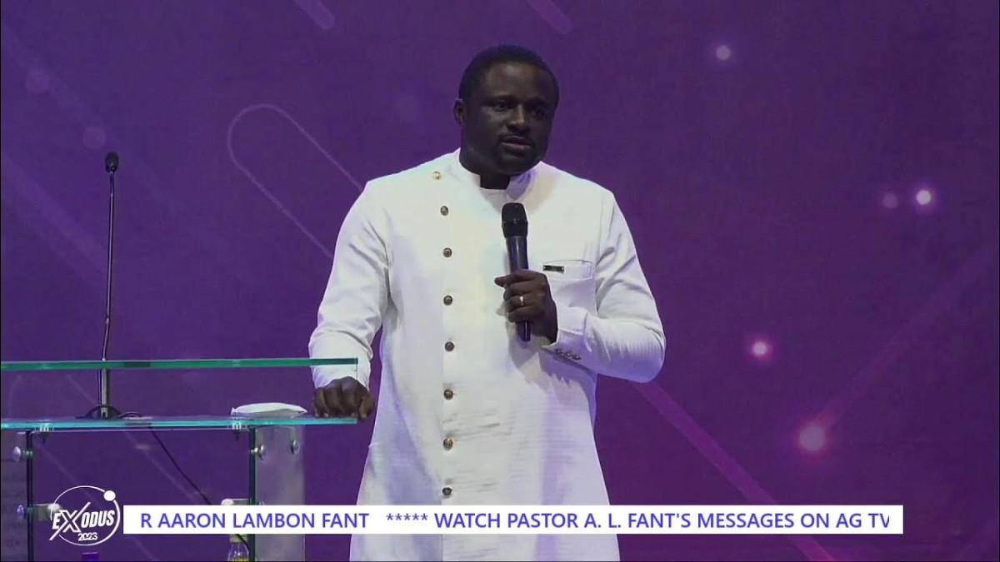

A Place of Power, Prayer & Fire
Welcome to the official ministry of Pastor Aaron Lambon Fant. Experience the transformative power of God's word.
Watch SermonsMeet Pastor Aaron
Pastor Aaron Lambon Fant is an Evangelist, Church Planter, and the Head Pastor of Sanctuary of Wind and Fire Assemblies of God, Tamale. With a passion for the gospel and a heart for the people, he has dedicated his life to spreading the living word to a dying world.
Read More

Latest Sermons
THIS LIFE WE HAVE TO CHILL 😀😀😀
A powerful message from Pastor Aaron Lambon Fant.
The Mystery of Altars
Deep spiritual insights into the realm of altars and their impact on our lives.
Pray For Your House
Part of the "Put Your House In Order" series, focusing on spiritual protection for the family.
Divine Provision
Understanding God's supernatural supply in every season of life.
Need Prayer?
Our prayer team is ready to stand with you in faith. Send us your prayer request today.
Submit Prayer Request